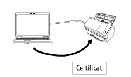

Présentation
Network Setup Tool for fi Series est une application permettant de connecter un scanneur d'image fi Series à un réseau pour le rendre disponible.
Network Setup Tool for fi Series est doté des outils suivants.
Les modèles de scanneurs pris en charge varient en fonction de l'outil utilisé pour le modèle. Vérifiez au préalable que le nom du modèle de scanneur que vous utilisez correspond à l'un des noms des modèles de scanneurs pris en charge par chaque outil. Pour en savoir plus sur les modèles de scanneurs pris en charge par chaque outil, consultez la rubrique Modèles de scanneurs pris en charge.
Outil de sélection du scanneur
Cet outil permet de sélectionner le scanneur que vous souhaitez utiliser à partir de l'ordinateur.
Vous pouvez sélectionner un scanneur unique parmi les scanneurs connectés à un réseau.
Lorsque vous sélectionnez fi-8950, fi-8930, fi-8820, fi-8040, fi-8190, fi-8290, fi-8170, fi-8270, fi-8150 ou fi-8250, vous pouvez également effectuer les opérations suivantes.
Lancez Paramètres réseau de fi Series (sur un navigateur Web) à partir de la fenêtre [Outil de sélection du scanneur] pour configurer les paramètres du scanneur
Vous pouvez démarrer Software Operation Panel depuis votre ordinateur pour configurer les paramètres du scanneur.
Pour plus de détails sur les Paramètres réseau de fi Series (sur un navigateur Web) et le Software Operation Panel, reportez-vous au Guide de l'opérateu'r du scanner.

Outil de configuration de l'adresse IP
Cet outil permet de définir une adresse IP, un nom de scanneur, des informations relatives à la sécurité et d'autres informations sur le réseau.
Outil d'enregistrement de certificats
Cet outil permet d'enregistrer un certificat sur le scanneur en vue de connecter le scanneur à un réseau nécessitant un certificat via Wi-Fi.
Après avoir enregistré un certificat sur le scanneur, configurez les paramètres Wi-Fi sur l'écran tactile du scanneur.
Les certificats pouvant être enregistrés sont les suivants :
Certificats client: fichier au format PKCS#12 (*.p12, *.pfx)
Certificats CA: fichier de certificat CA (*.cer, *.crt, *.der, *.pem)

Button Event Manager
Cet outil permet de spécifier l'application de numérisation d'image à démarrer lorsque vous appuyez sur une touche du scanneur.
Vous devez utiliser l'Outil de sélection du scanneur pour définir le scanneur connecté à un réseau afin de pouvoir l'utiliser sur un ordinateur.